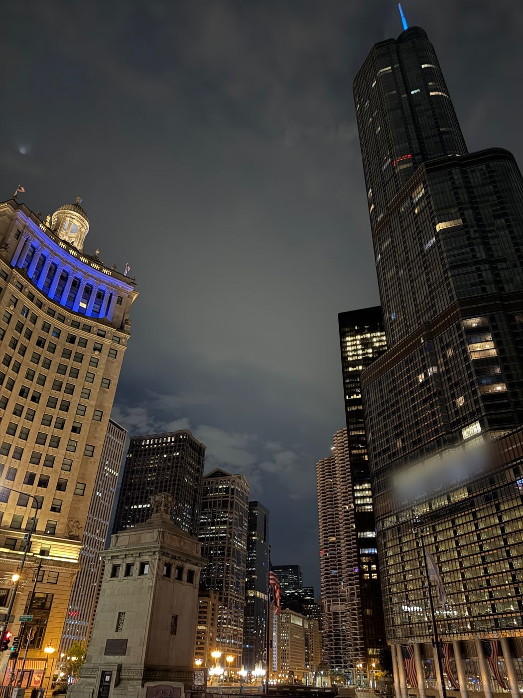

Dreams and Goals: My Vision as an Engineer
Most people look at a skyline at night and see the towers. Working in Utilities Estimating at Aecon has changed where I look. On my first live bid I did takeoffs for duct banks, the concrete encased conduits that carry power and communication lines under a city. Nobody takes a picture of a duct bank, but every lit window in a skyline depends on one.
My vision is to become a licensed engineer who builds the part of the city people never see, and builds it well enough that the people living above it never have to think about it. That means infrastructure that keeps working during ice storms and heavy rain, materials chosen for the full life of a project and not just the lowest price, and always putting public safety first.

I took this photo looking up from the Chicago River. Every lit window depends on power, water and data running under the street. A skyline is only as strong as what's buried beneath it, and that's the part I want to build.
Interests and Skills: My SMART Goals
I set these goals after my competency self-assessment, based on where I need to grow during my co-op.
Agility and Adaptability
By December 18, 2026, get comfortable doing takeoffs in Bluebeam Revu by practicing weekly on past drawings and tracking how long each takeoff takes, so I'm ready for live projects.
Critical Thinking and Problem Solving
By February 26, 2027, work on at least one live bid, check my own quantities against the drawings and specs before handing them in, and keep a list of corrections so my second package has fewer than my first.
Communication
By March 31, 2027, get better at reading bid packages by writing a one page summary of at least three packages (scope, key spec sections, drawing list, addenda, deadlines) and checking each with my supervisor.
Values and Personality
Values: Hard work, curiosity and family. My dad and a mentor back home always told me there's no shortcut, and that's still how I approach every task.
Learning style: I learn best from a good example. Once someone shows me how something is done, I can take it from there.
Communication style: Analytical. I work best with clear expectations, and I try to give others the same clarity when I explain my work.
What I learned about my emotional intelligence
I'm good at reading how people feel, but I don't always stop to think about their side, and I tend to stay quiet when something seems unclear. Early in my co-op I waited too long to ask for more direction, and it slowed me down. I'm now working on conflict management: raising unclear instructions or concerns the same day instead of waiting.
Building Credentials
The work I've done at school and on co-op is on my Career page and my Co-op Work Portfolio.